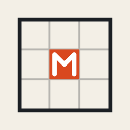
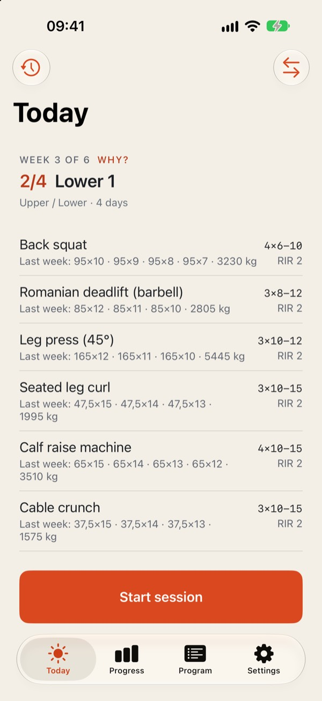
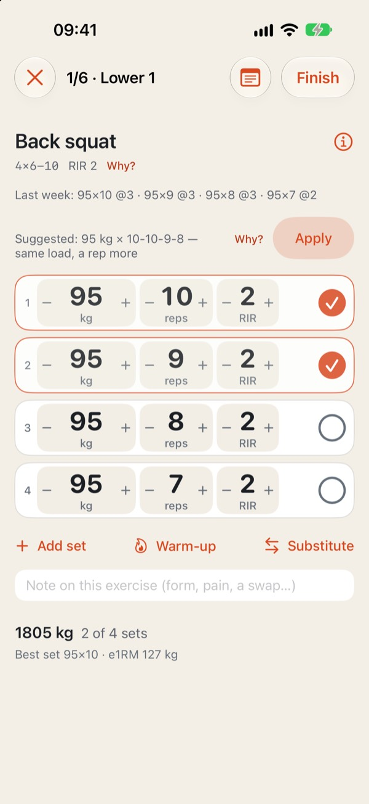
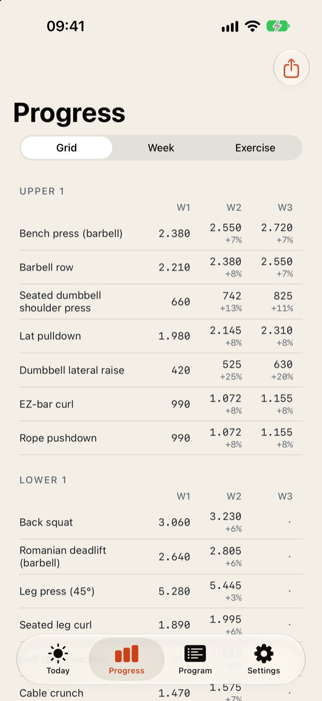
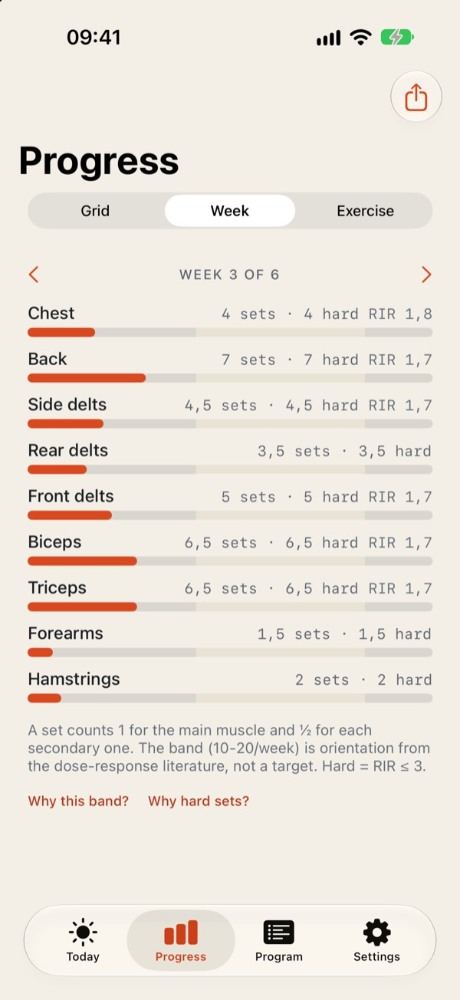

Seize Apps · iOS
Meso
Un programa es un bloque de semanas, no una lista de entrenos. Meso toma las sesiones que te escribió el entrenador —o una de sus plantillas— y las convierte en un registro que se rellena solo: cada serie llega con la carga y las repeticiones de la última vez, un toque la confirma y el esfuerzo se apunta como repeticiones en reserva. Después enseña si el bloque avanza: tonelaje por ejercicio semana a semana y series por músculo frente a lo que la evidencia dice que basta.




Qué hace
Una sola cosa, bien hecha.
Un toque por serie
Carga, repeticiones y RIR vienen rellenos de la última vez que hiciste el ejercicio; el ✓ es toda la entrada cuando nada cambió. Incrementos reales de gimnasio, una nota por ejercicio, calentamiento en rampa si lo quieres y un sustituto que lista primero el mismo músculo.
Bloques, no días
Una rejilla de tonelaje por ejercicio a lo largo de las semanas, series por músculo frente a la banda de 10–20 y la mejor serie con su 1RM estimado según avanzas. Sin rachas ni confeti: la progresión se mide en bloques.
Cada regla con su fuente
Por qué RIR, por qué una descarga, por qué la banda: cada principio de la app lleva su evidencia y lo sólida que es, con referencias que puedes comprobar. Honesta con lo que está claro y lo que no.
Privacidad
Tuyo, no nuestro.
Meso guarda tus programas y sesiones en tu dispositivo y en tu propia cuenta de iCloud. Apple Salud solo se escribe si lo activas, y nunca se lee. Sin cuenta, sin analítica.
Una app de Seize Apps.